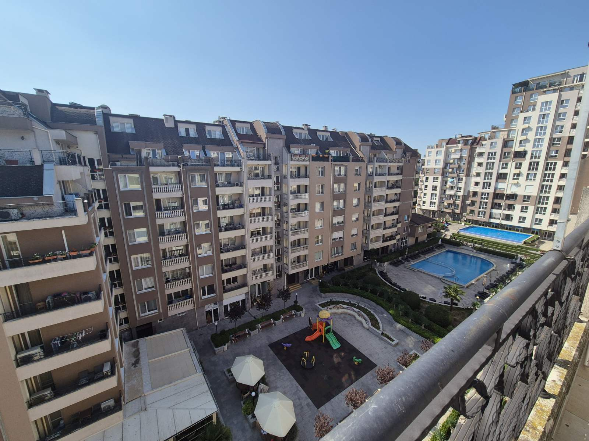
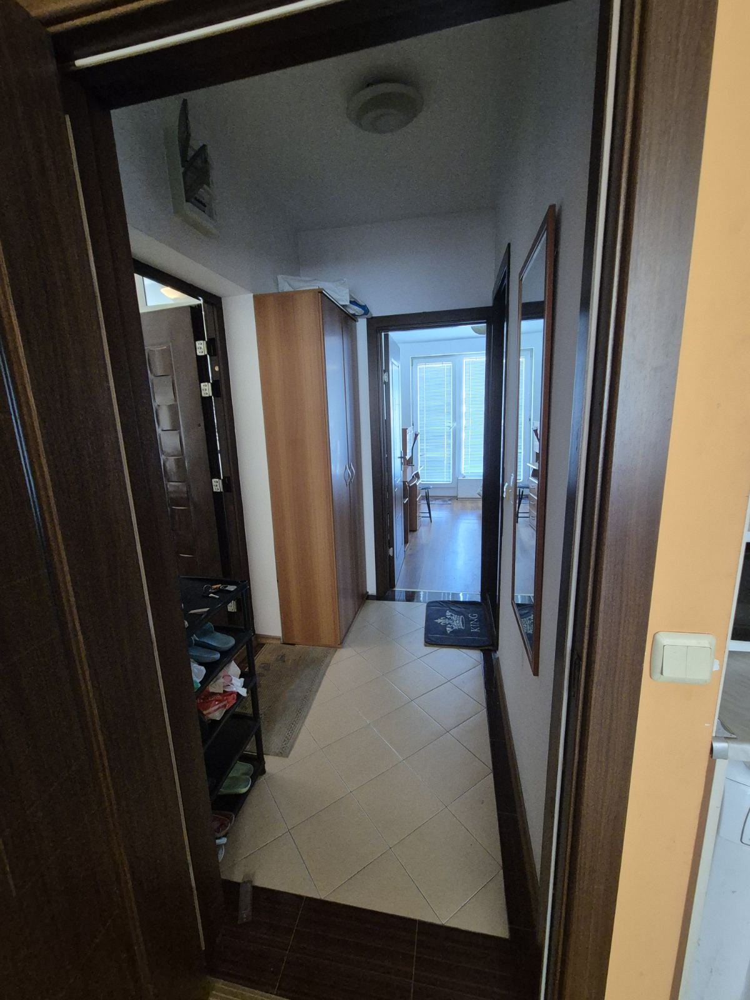
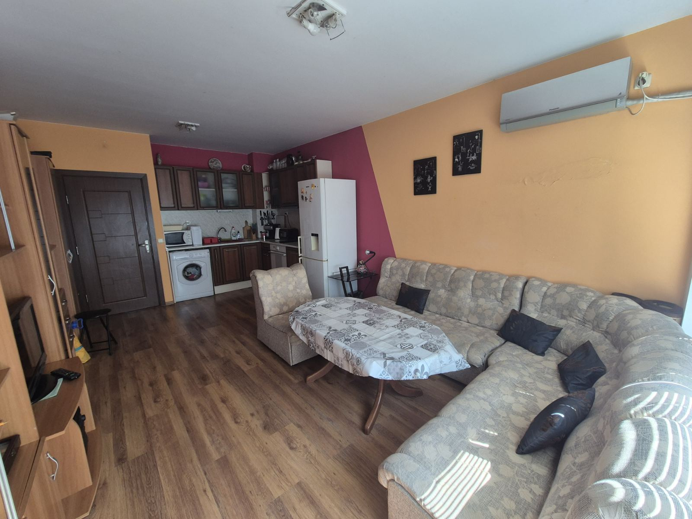
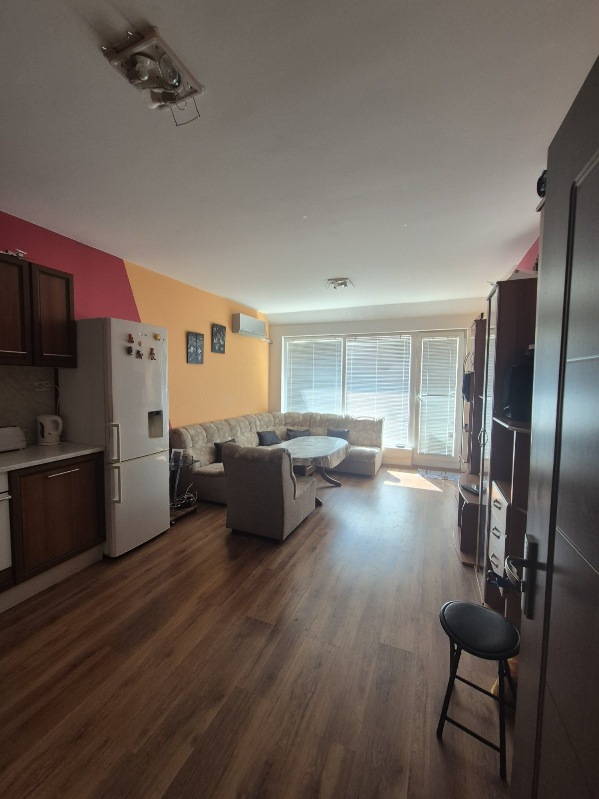
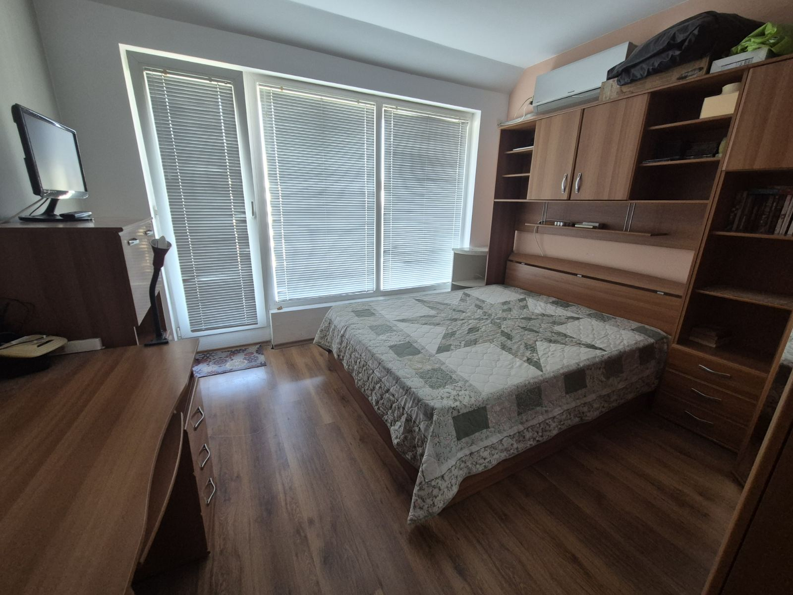
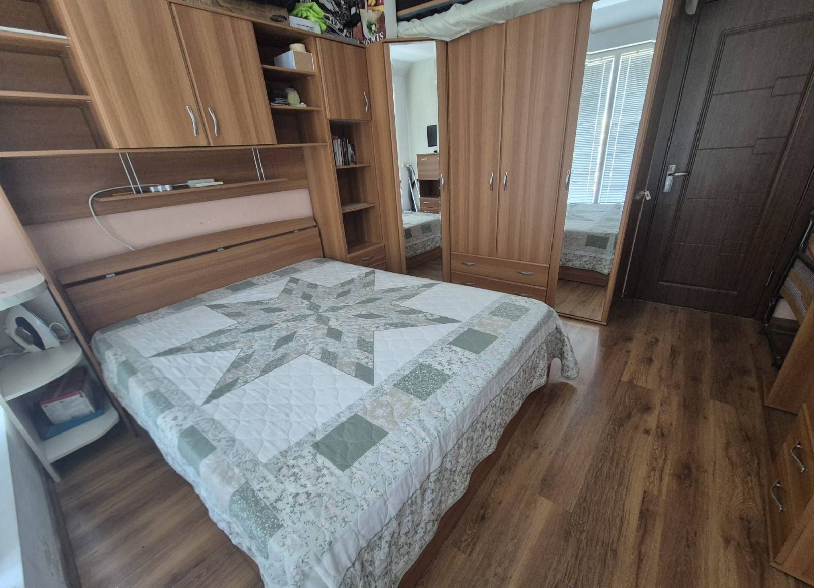
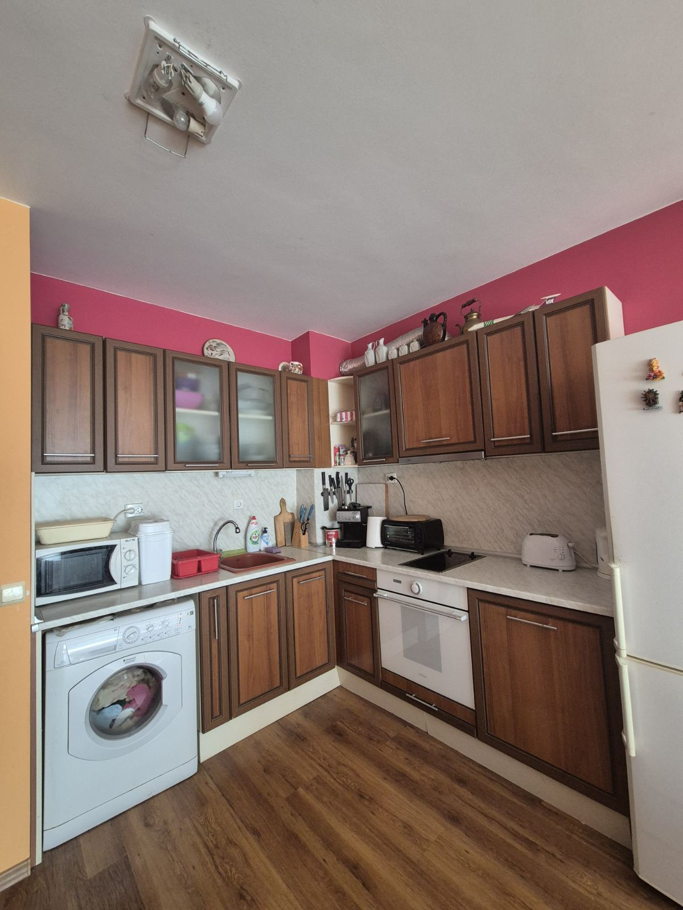
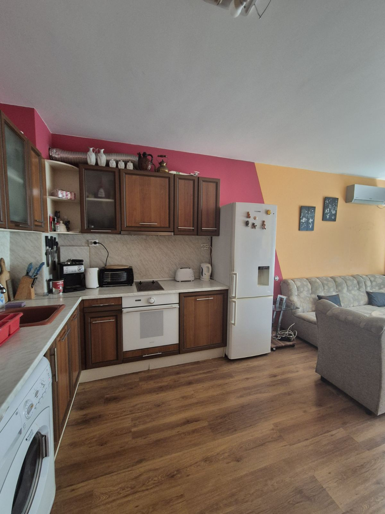
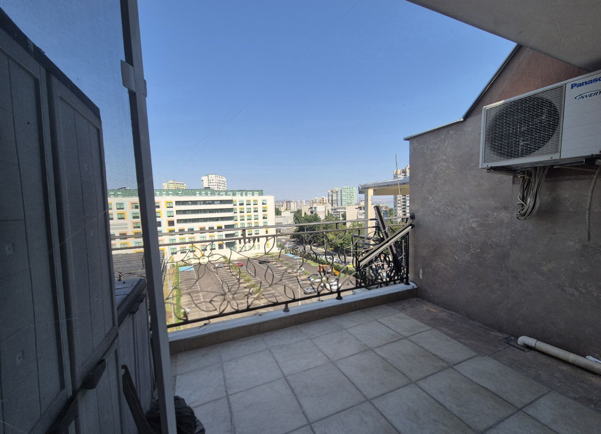
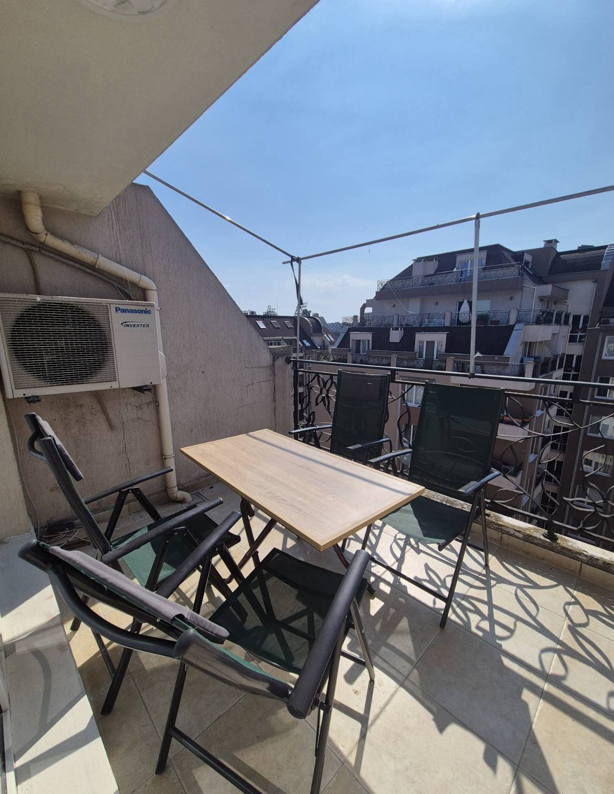

Сезонен наем: Октомври – Април. Директно от собственик.

Апартаметът е напълно оборудван за дългосрочно живеене и хоум офис, намира се на 7-ми етаж от 8. Състои се от дневна с кухненски бокс и огрома открита тераса на юг, спалня със също толкова голяма открита терса на север, разделени по средата с малък коридор където се намира входната врата и баня с тоалетна, което прави двете помещения напълно самостоятелни.

Дневна с кухненски бокс, ъглов диван с ратегателен механизъм, маса, фотьойл, секция с телевизор и малко гардеробче


Спалня с работно бюро, голям гардероб, библиотека и скрин с 22инчов телевизор.


Кухненски бокс с пералня, фурна, два керамични котлона, хладилник, микровълнова, кафемашина, фурничка за сандвичи, кана за гореща вода и тостер.


Северна тераса към спалнята - идеална за кафенце на прохлада.

Южна тераса към всекидневната - за биричка с изглед към басеина или вечеря на открито под звездите.

Комплексът предлага условия от най-висок клас за спокойствие и бърз достъп в града:
Жилището е подготвено за директно нанасяне без нужда от покупка на техника или посуда:
В ЦЕНАТА СА ВКЛЮЧЕНИ:
✓ Цифрова кабелна телевизия
✓ Бърз Wi-Fi интернет за хоум офис
✓ Таксата за поддръжка на затворения VIP комплекс
*Наемателят заплаща допълнително само консумирания ток и вода по индивидуалните партиди на апартамента. Изисква се 1 месечен депозит при наемане. Без домашни любимци.*